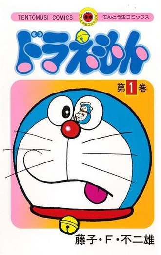

This is article
Doraemon (tiếng Nhật: ドラえもん phát âm tiếng Nhật: [doɾaemoɴ]) là một series manga của Nhật Bản do tác giả Fujiko F. Fujio sáng tác từ tháng 12 năm 1969 đến tháng 4 năm 1996, đăng lần đầu trên tạp chí CoroCoro Comic của nhà xuất bản Shogakukan. Từ năm 1974 đến năm 1996, có tổng cộng 821 chương truyện được tuyển chọn đóng gói đưa vào 45 tập tankōbon dưới ấn hiệu Tentōmushi Comics cũng do Shogakukan xuất bản. Manga đã được dịch và xuất bản bằng nhiều ngôn ngữ trên thế giới, trong đó bao gồm cả tiếng Việt do Nhà xuất bản Kim Đồng biên soạn.
Nội dung series kể về cuộc đời của cậu bé Nobita và chú mèo máy Doraemon từ tương lai đến để giúp cuộc sống của cậu bé trở nên tốt hơn. Tác phẩm ba lần được chuyển thể thành anime: lần đầu do Nippon TV Dōga sản xuất gồm 52 tập phát sóng trên Nippon TV từ 1 tháng 4 đến 30 tháng 9 năm 1973, lần thứ hai do Shin-Ei Animation sản xuất với 1787 tập phát từ 2 tháng 4 năm 1979 đến 18 tháng 3 năm 2005 trên TV Asahi và lần thứ ba cũng do Shin-Ei Animation sản xuất phát trên TV Asahi từ 15 tháng 4 năm 2005 đến nay. Tác phẩm cũng được chuyển thể thành các loại hình truyền thông khác như phim điện ảnh và trò chơi điện tử.
Doraemon

Bia tap truyen dau tien cua doraemon
#1
- The loai
Hai kich, khoa hoc vien tuong
#2
- Tac gia Fujiko F. Fujio
- Nha xuat ban Shogakukan
Nha xuat ban khac